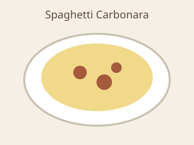

Home
Spaghetti Carbonara

Description
Spaghetti carbonara is a classic Roman pasta made with only a handful of ingredients. The sauce comes from eggs and cheese, which turn silky from the heat of the pasta.
It is rich, peppery, and ready in about 25 minutes, making it a great weeknight dinner.
Ingredients
- 400 g spaghetti
- 150 g pancetta or bacon, diced
- 3 large eggs plus 1 egg yolk
- 1 cup grated Pecorino Romano or Parmesan
- 2 cloves garlic
- Freshly ground black pepper
- Salt, for the pasta water
Steps
- Boil the spaghetti in well-salted water until al dente. Reserve 1 cup of pasta water, then drain.
- Fry the pancetta with the garlic in a large pan until crisp, then discard the garlic.
- Whisk the eggs, egg yolk, cheese, and plenty of black pepper in a bowl.
- Toss the hot spaghetti in the pan with the pancetta, off the heat.
- Quickly stir in the egg mixture, adding splashes of pasta water until the sauce is creamy.
- Serve immediately with extra cheese and pepper.